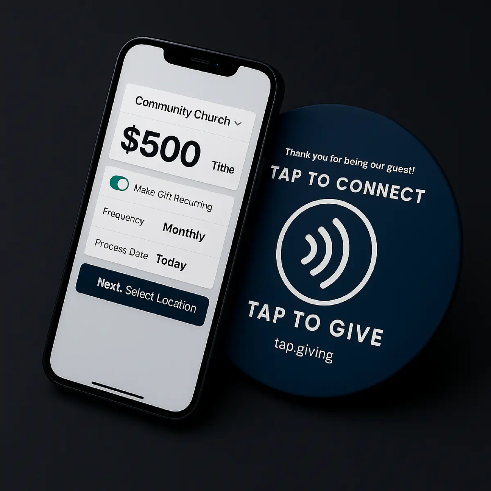

First-Time Visitors to First-Time Givers: The NFC Advantage
Every Sunday, visitors walk into your church ready to connect. Most of them would give if they could—but your current giving methods ask too much of someone who just walked through the door. Here’s how NFC tap plates turn that gap into a growth engine.

1. The Visitor Giving Problem
Picture this: someone visits your church for the first time. They loved the worship. The message resonated. They’re feeling generous, grateful, moved. Then the offering moment comes—and they hit a wall.
They don’t know your church’s app. They haven’t memorized your text-to-give number. They can’t find the giving URL on your website. And they’re certainly not going to download an app for a church they’re visiting for the very first time. So the plate passes, the moment passes, and their generous impulse dies quietly in their pocket.
Every Barrier a Visitor Faces
- Don’t know the church’s app, text number, or website
- Won’t download an app for a one-time visit
- Feel awkward Googling the giving page mid-service
- 73% of Americans carry little or no cash regularly
What Visitors Actually Need
- Zero prior knowledge required
- No download, no account, no sign-up
- Something intuitive they already know how to do
- A way to participate without standing out
The Result?
Fewer than 5% of first-time visitors give during their first visit using traditional digital methods. That’s not a generosity problem—it’s a friction problem. The willingness is there. The mechanism isn’t.
2. Why That First Gift Matters More Than You Think
Here’s what most church growth conversations miss: giving isn’t just a financial event—it’s a commitment event. When someone gives to your church for the first time, something shifts psychologically. They’ve invested. They have skin in the game. And that changes everything about whether they come back.
Behavioral scientists call it the “commitment and consistency” principle. Once someone takes an action that aligns with an identity—in this case, “I’m the kind of person who supports this church”—they’re significantly more likely to take future actions that reinforce that identity. The first gift isn’t just $20. It’s the beginning of a relationship.
The Psychology of the First Gift
The Investment Effect
A gift creates a psychological “investment” in the community. People don’t walk away from things they’ve put their own resources into. That’s why the first gift is disproportionately valuable.
Generosity Before Attendance
When the relationship starts with generosity rather than just attendance, visitors feel like participants—not spectators. They’re already contributing to the mission before they even join a small group.
Think About It This Way
If 200 first-time visitors walk through your doors this year and only 5% give, that’s 10 potential new donors. But if NFC plates bump that to 15–20%, you’re looking at 30–40 new donors—many of whom will become recurring givers and eventually members. That’s not just a giving strategy. That’s a growth strategy.
3. How NFC Removes Every Barrier
NFC tap plates don’t just reduce friction—they eliminate it entirely. Every objection a first-time visitor might have to giving digitally is addressed by one simple gesture: tap your phone on the plate.
That’s the same motion they use to pay for coffee at Starbucks, tap through the subway turnstile, or unlock their hotel room door. There’s nothing to learn. There’s nothing to figure out. The plate arrives, they tap, the giving page opens. Done.

No App to Download
The visitor hasn’t committed to your church yet. Asking them to install an app feels like asking for a second date before the first one is over. NFC skips this entirely.
No Account to Create
They don’t even know if they’re coming back. Forcing an account creation in the middle of a worship service is the fastest way to lose someone’s goodwill.
No URL to Type
Good luck typing “yourchurch.tithely.com/give” on a phone screen in a dim sanctuary while the worship team is playing. NFC opens the exact right page automatically.
No QR Code to Figure Out
QR codes require opening a camera, finding the code, holding steady, and hoping the lighting cooperates. Half your visitors won’t bother. Tapping is faster and works in any light. For a deeper look at how the two methods stack up, see our QR codes vs. NFC comparison for churches.
The Three-Second Test
If a first-time visitor can’t figure out how to give in three seconds, they won’t. That’s the reality. NFC tap plates pass that test every single time. Tap the plate, giving page opens, enter amount. It’s the only giving method with zero learning curve.
5. Beyond the First Gift: The Retention Loop
The first gift isn’t the end goal—it’s the starting point of a loop that turns visitors into members. When you understand this loop, you stop thinking about NFC plates as a “giving tool” and start seeing them as a retention tool.
Visitor Taps & Gives
Sunday morning
The offering plate passes. They tap their phone. The giving page opens. They give $25. It took three seconds and zero prior knowledge.
They Feel Connected
That same day
The act of giving creates a sense of ownership. They’re no longer “just visiting.” They’ve participated. They’ve invested. The church is now partly theirs.
They Return Next Week
7 days later
Because they gave, they’re 3–5x more likely to come back. The commitment principle is at work. They want to see what their gift is supporting.
They Give Again & Go Recurring
Weeks 2–4
The second gift is easier than the first. By the third or fourth visit, they’re setting up recurring giving. The pattern is established.
They Become a Member
Months 1–3
Givers join small groups, volunteer, and eventually become members at a significantly higher rate than non-givers. The first tap started the whole journey.
Maximize the Loop With Your Giving Platform
Many giving platforms—Tithely, Subsplash, Planning Center, and others—let you customize what visitors see when they land on your giving page. Take advantage of that:
- Add a “First-Time Visitor” or “I’m New Here” giving fund option
- Include a brief connection card or email opt-in on the giving confirmation page
- Set up an automated thank-you email that invites them back next Sunday
6. Real Numbers: What Happens When Visitors Can Actually Give
Let’s stop talking theory and run the numbers. The math on visitor giving is striking once you lay it out—even modest improvements create outsized results because you’re unlocking revenue that currently sits at zero.
Consider a mid-sized church with 300 average weekly attendance. Churches typically see about 10–15% of their weekly attendance as visitors over the course of a year—and that percentage spikes dramatically during high-attendance seasons like Advent and Christmas Eve. Let’s walk through what happens when those visitors can actually give.
The Visitor Giving Math
Your Starting Point
Without NFC Plates
- 5% of visitors give = 10 new donors
- Average first gift: $30
- Easter-day visitor giving: $300
- Visitors who go recurring: 2–3
- Annual visitor-sourced giving: ~$2,460
With NFC Tap Plates
- 15–20% of visitors give = 30–40 new donors
- Average first gift: $35
- Easter-day visitor giving: $1,200
- Visitors who go recurring: 8–12
- Annual visitor-sourced giving: ~$9,600+
The Compounding Effect
And that’s a conservative estimate for a 300-person church. Scale it up to 500, 1,000, or multi-campus and the numbers grow proportionally. The point is clear: even a modest improvement in visitor giving percentage—from 5% to 15%—translates to thousands of dollars in new annual revenue, all from a one-time investment of a few dollars per plate.
7. Making Your Church “Visitor-Ready” with NFC
Having NFC plates is one thing. Deploying them in a way that maximizes visitor participation is another. If you haven’t set up tap plates yet, our complete launch guide walks you through the entire process in under 30 minutes. Once you’re up and running, here are the practical steps that growth-minded churches are using to make sure no visitor’s generous impulse goes to waste.
Plates in Every Section, Not Just One at the Front
If you only have one or two plates being passed from the front, visitors in the back rows might never see them—or the plate reaches them after the offering moment has passed and the sermon has started. That’s a missed opportunity.
Place tap plates at the end of every row or section. At $3.50–$4.50 per plate, saturation is affordable. A church with 20 rows needs about 10 plates to cover both sides. The minimum order is 100 plates at $4.50 each ($450 total), so you’ll have plenty of extras for lobbies, welcome centers, special events, and multi-campus use—one purchase, forever.
Train Ushers to Offer the Plate to Everyone
Some ushers instinctively skip people they don’t recognize, thinking “they’re just visiting, I don’t want to make them uncomfortable.” That’s well-intentioned but exactly backward.
Train your usher team to pass the plate to every single person, including visitors. With NFC plates, the act of tapping is so quick and frictionless that it doesn’t feel like pressure. It feels like an invitation. And visitors want to be invited.
Announcements That Welcome Visitors to Participate
The way you introduce the offering moment matters—especially for visitors. Skip the insider language. Don’t say “members, it’s time for tithes and offerings.” That phrase tells visitors this moment isn’t for them.
“Whether you’ve been with us for years or this is your very first Sunday, we’d love for you to be part of this moment. When the plate comes your way, just tap your phone on it—no app needed, no account to set up. It takes about three seconds. Your generosity makes everything we do here possible.”
This framing does three critical things: it includes visitors explicitly, it explains the technology in one sentence, and it normalizes participation so nobody feels singled out.
NFC Isn’t Just a Giving Tool—It’s a Growth Tool
Every church wants more visitors to become members. Every pastor wants newcomers to feel welcomed, included, and connected. But the path from visitor to member doesn’t start with a connection card or a follow-up email. It starts with a moment of participation—and for many visitors, that moment is the offering.
NFC tap plates transform the offering from a barrier into a bridge. They turn a moment where visitors feel excluded into a moment where they feel like they belong. And the numbers prove it: more first-time givers means more return visits, more recurring donors, and more members. Ready to make your church visitor-friendly? Order your plates today.
Turn Your Next Visitor Into Your Next Giver
Order NFC tap plates for your church today. No subscription. No platform switch. Just a simple upgrade that makes every visitor feel welcome to give.
Related Articles
Why Churches Love Tap.Giving: 7 Reasons Pastors Are Making the Switch
From zero monthly fees to instant setup, discover why churches are choosing Tap.Giving NFC plates.
StrategyEaster Tap-to-Give: How NFC Plates Help Churches Maximize Their Biggest Sunday
Your step-by-step playbook for using NFC tap plates to capture Easter guest generosity.
InsightsNFC Giving for Small Churches: Big Impact on a Tiny Budget
How churches of any size can use NFC tap plates to increase giving without increasing costs.
4. The Social Proof Effect
There’s a powerful psychological dynamic at play when an NFC plate passes through a row. Visitors aren’t just receiving an invitation to give—they’re watching other people give. And that changes everything.
When a visitor sees the person next to them tap their phone on the plate, two things happen simultaneously. First, they instantly understand how it works—no instructions needed. Second, they feel the gentle pull of social proof. Everyone else is participating. The plate is coming their way. Tapping feels like joining in, not like handing over money.
This is fundamentally different from digital giving methods that happen in isolation. When someone opens an app on their phone, nobody else sees it. There’s no communal moment. No shared experience. The offering plate—enhanced with NFC—preserves the communal ritual while making the actual giving effortless.
See It
Visitors watch regular members tap their phones. The technology explains itself in real time.
Do It
The plate creates a natural moment of participation. Tapping feels like belonging, not like a transaction.
Belong
Giving alongside others transforms a financial act into a communal one. Visitors feel included from moment one.
What Pastors Tell Us
“The biggest surprise wasn’t that giving went up—it’s that visitors started giving. We’d never seen that before. Something about the plate passing and people tapping… it just clicked. Guests didn’t feel like outsiders anymore. They were part of the moment.”